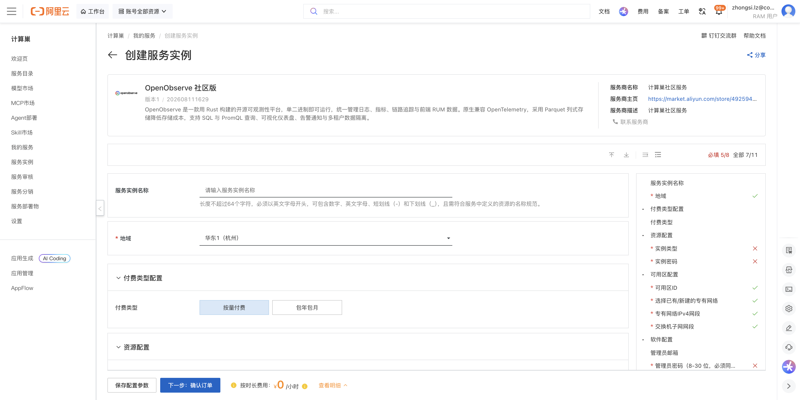
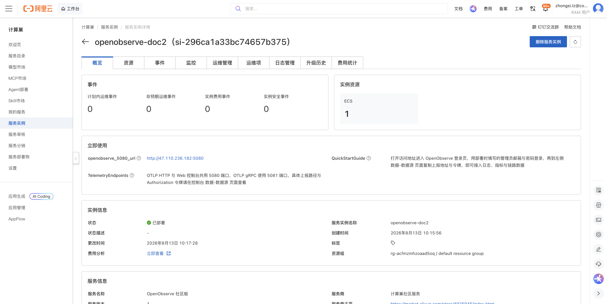
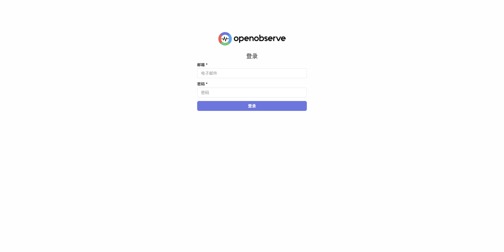
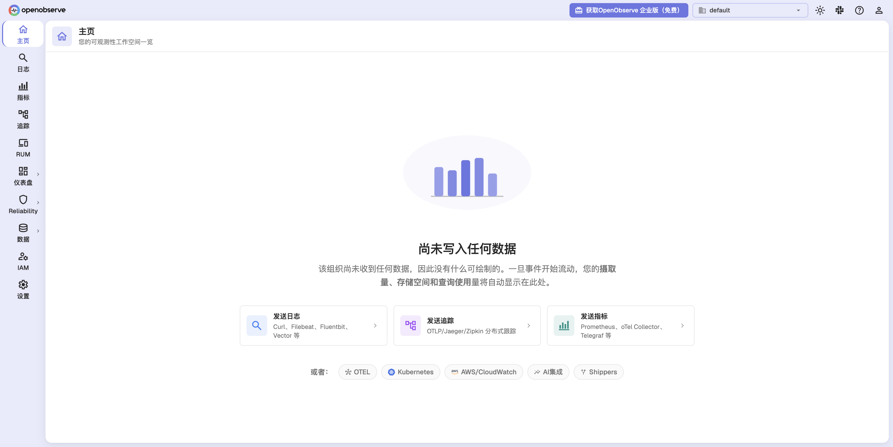
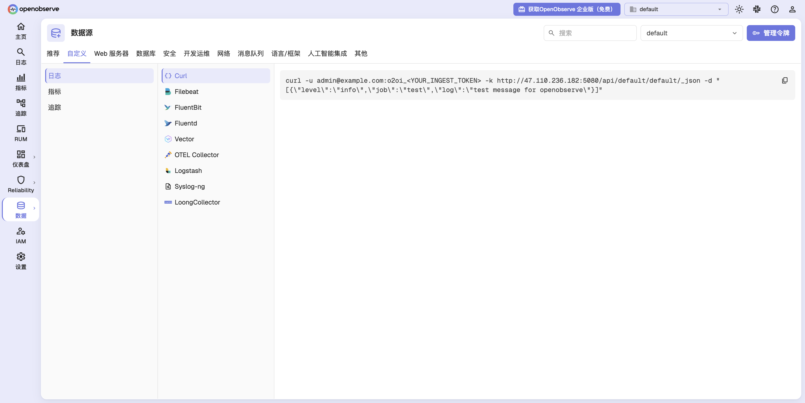
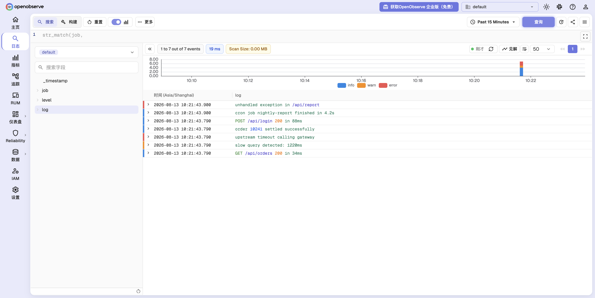

OpenObserve 社区版 部署文档
概述
OpenObserve 社区版 是一款用 Rust 构建的开源可观测性平台，单二进制即可运行，统一管理日志、指标、链路追踪与前端 RUM 数据。原生兼容 OpenTelemetry，采用 Parquet 列式存储降低存储成本，支持 SQL 与 PromQL 查询、可视化仪表盘、告警通知与多租户数据隔离。通过阿里云计算巢服务，您可以快速部署 OpenObserve 社区版，实现开箱即用。
部署流程
1. 创建服务实例
访问 OpenObserve 社区版 服务部署链接，按提示填写部署参数：

需要填写的主要参数包括：
| 参数 | 说明 |
|---|---|
| 实例类型 | 建议选择 2 vCPU / 8 GiB 及以上规格（如 ecs.u1-c1m4.large） |
| 实例密码 | ECS 服务器登录密码，长度 8-30 位 |
| 可用区 / 专有网络 | 保持默认即可，将自动新建 VPC 与交换机 |
| 管理员邮箱 | OpenObserve 控制台的登录账号，默认 admin@example.com |
| 管理员密码 | OpenObserve 控制台的登录密码，8-30 位，须同时包含小写字母、大写字母、数字和特殊字符 |
管理员邮箱与管理员密码即为登录 OpenObserve 控制台的凭据，请妥善保存。
2. 确认订单并创建
参数填写完成后可以看到对应询价明细，确认参数后点击 下一步：确认订单。确认订单完成后同意服务协议并点击 立即创建 进入部署阶段。
3. 等待部署完成
等待部署完成后进入服务实例管理，在控制台找到 OpenObserve 社区版 访问链接。实例详情页的 立即使用 模块中会展示 openobserve_5080_url 访问地址，以及数据接入端口说明（OTLP HTTP 与 Web 控制台共用 5080 端口，OTLP gRPC 使用 5081 端口）。

4. 登录服务
单击 openobserve_5080_url 链接访问服务，进入 OpenObserve 登录页。

输入部署时填写的管理员邮箱与管理员密码，点击 登录 即可进入 OpenObserve 控制台首页。首次登录时尚无数据写入，页面会引导您接入第一个数据源。

数据接入
1. 获取上报地址与令牌
在左侧导航栏选择 数据 → 数据源，切换到 自定义 页签，即可按数据类型（日志 / 指标 / 追踪）和采集器类型（Curl、Filebeat、FluentBit、Fluentd、Vector、OTEL Collector、Logstash 等）查看对应的上报地址与接入示例。页面右上角的 管理令牌 可查看和轮换接入令牌。

以 日志 → Curl 为例，复制页面中的命令即可完成一次日志上报（将令牌替换为您自己实例的值）：
curl -u admin@example.com:<YOUR_INGEST_TOKEN> -k \
http://<实例公网IP>:5080/api/default/default/_json \
-d '[{"level":"info","job":"web-api","log":"GET /api/orders 200 in 34ms"}]'
上报成功后会返回如下结果：
{"code":200,"status":[{"name":"default","successful":1,"failed":0}]}
2. 查询与检索日志
数据到达后会自动创建数据流。在左侧导航栏选择 日志，选择数据流 default 并点击 查询，即可看到上报的日志事件、按日志级别着色的时间直方图，以及左侧自动识别出的字段（job、level、log）。您可以进一步使用过滤条件、SQL 模式和 VRL 函数细化查询结果。

官方文档
更多信息请访问官方文档：OpenObserve 官方文档